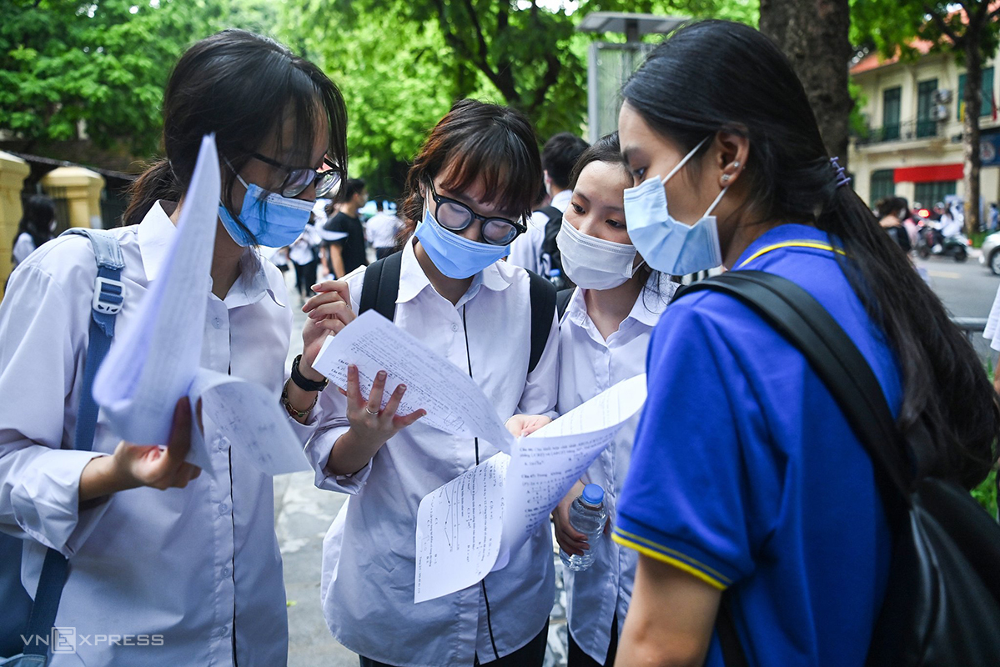

Những đại học nhận hồ sơ xét tuyển học bạ từ tháng 3
Thí sinh có nguyện vọng vào Học viện Nông nghiệp Việt Nam, Đại học Điện lực có thể nộp hồ sơ xét học bạ ngay từ bây giờ.Năm 2022, Học viện Nông nghiệp Việt Nam tuyển sinh bằng ba phương thức gồm xét tuyển thẳng, dựa vào kết quả học tập THPT (học bạ) và dựa vào kết quả thi tốt nghiệp THPT. Với phương thức xét học bạ, trường nhận hồ sơ đợt một từ 1/3 đến 29/4, thông báo kết quả vào 4/5.
Thí sinh cần có tổng điểm trung bình cả năm lớp 11 của ba môn theo tổ hợp xét tuyển đạt từ 20 trở lên (đã cộng điểm ưu tiên). Các em được đăng ký theo nhóm ngành với tối đa hai nguyện vọng và được xét theo thứ tự ưu tiên.
Nếu trúng tuyển nguyện vọng một, sẽ không được xét nguyện vọng hai. Thí sinh không trúng tuyển nguyện vọng hai sẽ tiếp tục được xét vào các nhóm ngành khác khi còn chỉ tiêu.
Ngoài đợt một, trường còn đợt xét tuyển học bạ khác, từ 5/5 đến 15/6. Đợt này, thí sinh có thể sử dụng kết quả học tập lớp 12.

Đại học Điện lực cũng đang thu hồ sơ xét tuyển bằng học bạ. Thí sinh có thể nộp ngay từ bây giờ cho đến 20/6.
Năm nay, trường sử dụng bốn phương thức để tuyển 3.330 chỉ tiêu, trong đó hơn 900 sẽ được tuyển bằng học bạ THPT. Các tổ hợp xét tuyển gồm A00 (Toán, Lý, Hoá), A01 (Toán, Lý, Anh), D07 (Toán, Hoá, Anh) và D01 (Toán, Văn, Anh).
Điểm xét tuyển là tổng điểm trung bình ba năm học THPT của ba môn trong tổ hợp cộng điểm ưu tiên. Thí sinh có tổng điểm xét tuyển từ 18 trở lên đủ điều kiện nộp hồ sơ.
Kết quả sơ tuyển được thông báo trên trang web tuyển sinh của trường, trước 5/7. Thí sinh qua sơ tuyển sẽ chính thức trúng tuyển khi tốt nghiệp THPT. Những em tốt nghiệp các năm trước có thể làm thủ tục nhập học ngay khi có kết quả sơ tuyển.
Đại học Công nghiệp Dệt may Hà Nội xét tuyển thẳng thí sinh có điểm học tập lớp 11, hoặc kỳ II lớp 11 và kỳ I lớp 12, hoặc cả lớp 12 đạt loại giỏi. Ngoài ra, trường cũng xét theo học bạ THPT, dựa vào kết quả học tập lớp 11 và kỳ I lớp 12 hoặc học bạ lớp 12 theo tổ hợp các môn đăng ký.
Trường nhận hồ sơ xét tuyển đợt một trước 31/3.Thí sinh nộp hồ sơ đợt này sẽ được giảm 10% học phí kỳ I năm thứ nhất. Học sinh lớp 12 chưa tốt nghiệp THPT có thể bổ sung hồ sơ khi có chứng nhận tốt nghiệp tạm thời.
Một số trường khác như Đại học Sư phạm Nghệ thuật Trung ương, Đại học Thành Đô cũng đã nhận hồ sơ xét tuyển bằng học bạ. Đại học Thành Đô nhận hồ sơ từ giữa tháng 2 đến 28/4. Thí sinh đủ điều kiện nếu có điểm trung bình ba môn theo tổ hợp của ba học kỳ (hai kỳ lớp 11 và kỳ I lớp 12) hoặc điểm trung bình ba môn ở lớp 12 cộng điểm ưu tiên đạt 18 trở lên.
Trong tháng 3, các đại học sẽ công bố đề án tuyển sinh 2022, trong đó nêu rõ tổ hợp, phương thức xét tuyển và chỉ tiêu từng ngành cũng như các mốc thời gian nhận hồ sơ, thông báo kết quả sơ tuyển trên các kênh thông tin của trường
Các chuyên gia lưu ý khi xem phương thức xét tuyển, thí sinh cần chú ý đến đối tượng xét tuyển, tiêu chí, yêu cầu để tránh nộp hồ sơ theo phương thức không phù hợp.